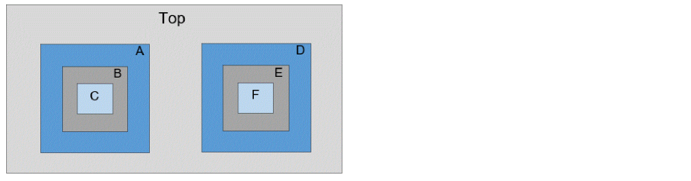

SIM Flow Examples
Example 1: This example illustrates how to read and write Timing Context for SIM.
Consider a top level design with six submodules - A, B, C, D, E & F - with multiple hierarchy levels as illustrated in the figure below.

Below command will write the context of all the instances - A, B, C, D, E & F in a single step without any significant memory/runtime overhead.
write_timing_context context.db -module {A B C D E F}
The -skip_interface_paths parameter is not mandatory since all the modules have only one instantiation at top level. This should be used only if you want to use Timing Context to perform the timing analysis on reg-reg paths only.
The command will create 6 subdirectories named A, B, C, D, E & F inside context.db to write the context of corresponding module within each sub directories.
Since the write_timing_context command triggers a timing update, the command can replace update_timing in the run scripts.
read_libs <>
read_verilog 'Top.v A.v B.v C.v D.v E.v F.v'
set_top_module Top
read_spef <>
read_sdc <>
write_timing_context context.db -module {A B C D E F}
report_timing
The read_timing_context command must be issued after loading the block constraints. The context data of required module will be automatically fetched from the corresponding sub-directory within context.db when the read_timing_context command is issued.
Sample Block Script for Block A:
read_libs <>
read_verilog 'A.v'
set_top_module A
read_spef <>
read_sdc context.db/A/A.sdc
read_timing_context context.db
report_timing
Return to top